0% completed
Broker Architecture
On This Page
Know the Vocabulary
Part 1: What the Broker Pattern Is
The Definition
The Problem It Solves
Part 2: The Five Core Components
Component 1: The Client
Component 2: The Server
Component 3: The Broker
Component 4: The Client-Side Proxy (Stub)
Component 5: The Server-Side Proxy (Skeleton)
Part 3: The Message Flow
The Complete Request-Response Lifecycle
Asynchronous Message Flow
Part 4: Service Discovery
The Broker's Registry
Registration Patterns
Health Checking
Part 5: Load Balancing
Why Load Balancing Lives in the Broker
Part 6: Fault Tolerance
How the Broker Handles Server Failures
Part 7: Broker Topologies
The Central Broker Topology
The Hierarchical Broker Topology
The Federated Broker Topology
The Embedded (Sidecar) Topology
Part 8: Where Broker Architecture Appears in Production
CORBA and the Early Broker Frameworks
A Related Pattern: Message Brokers
API Gateways
Service Meshes
Part 9: Advantages and Limitations
The Real Advantages
The Real Limitations
When to Use a Broker, and When Not To
FAQs
Key Takeaways
Imagine an order service whose code needs to call inventory.reserve(sku, 2). The inventory object does not live in the same process. It runs on another machine, and several copies of it may be running at once.
The caller knows what it wants done but does not know which specific server is currently available to do it, where that server is running, or how to reach it directly. Now multiply this by hundreds of services, each of which calls several others.
Without any coordination mechanism, every client must maintain its own registry of server addresses. Every service must know every other service's location.
When a server moves, crashes, or scales horizontally, every client that depends on it must be updated. The system is a tightly coupled web where a change to one component requires changes everywhere else.
The broker pattern solves this by introducing a mediator: a component that sits between clients and servers and takes responsibility for routing, service discovery, and communication coordination.
Clients do not call servers directly. They send requests to the broker, specifying what they want done. The broker finds the right server, forwards the request, and returns the response.
The client never needs to know where the server lives.
This sounds simple, but it changes how the whole system evolves.
Clients are decoupled from server locations and instance counts. They still depend on the service's interface and on the broker itself.
Servers can be added, removed, moved, or replaced without clients knowing.
Clients can be added without servers knowing. The broker absorbs all the coordination complexity that would otherwise be distributed across every component in the system.
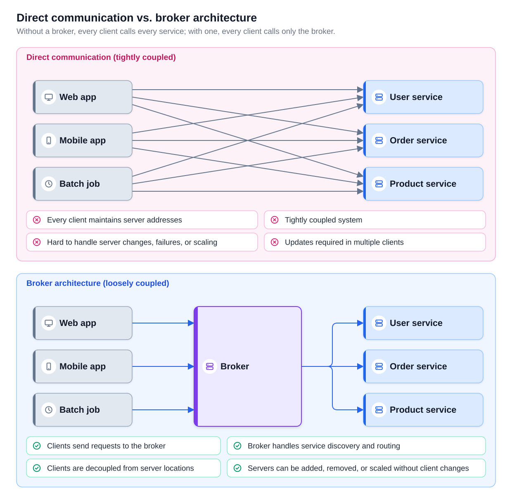
Know the Vocabulary
This lesson uses the terms below repeatedly. Read them once now and return here when a later section needs one.
- Broker: In the broker pattern, the intermediary that receives each client request, finds a registered server that can handle it, forwards the request and returns the response.
- Service discovery: Finding a healthy instance of a service through a registry of network addresses, which instances join at startup and leave at shutdown. Callers query the registry directly, or a load balancer queries it for them.
- Location transparency: The property that a client calls a service in the same way, wherever the service runs and however many instances it has.
- Message broker: A server, such as RabbitMQ or Kafka, that receives messages from producers and delivers them to consumers.
- Client-side proxy (stub): A local object that stands in for the remote service. It turns each method call into a message for the broker and the reply into a return value.
- Broker registry: The broker's live table of the available instances of each service, with their addresses, health and capacity. It changes at runtime, unlike the design-time service registry of SOA.
- Circuit breaker: A component that fails every call to a downstream service immediately (open) once its failures pass a threshold. After a cooldown, it allows a few trial calls (half-open) and resumes normal calls (closed) if they succeed.
- Service definition file: A file that describes a service's operations and their parameters, such as a Protobuf file for gRPC. Code generation tools produce the stub and the skeleton from it.
- Serialization: Converting parameters or return values into a wire format, such as JSON or binary. Deserialization converts them back into native objects.
- Server-side proxy (skeleton): The counterpart of the stub on the server. It turns each message from the broker into a local method call and the result into a response message.
- Self-registration: Each server registers with the broker at startup, deregisters at shutdown and sends periodic heartbeats while it runs. In third-party registration, an external component, such as Kubernetes, does this for the service.
- Sidecar proxy: A small proxy process that runs next to each service instance, such as a container in the same Kubernetes pod, and handles all of its network traffic.
Part 1: What the Broker Pattern Is
The Definition
Broker architecture is a distributed systems pattern that uses an intermediary component, the broker, to coordinate communication between clients and servers.
Clients send requests to the broker rather than directly to servers.
The broker locates the appropriate server, forwards the request, receives the response, and returns it to the client.
The pattern belongs to the broader category of architectural styles focused on loose coupling. Its defining property is location transparency: clients do not need to know where servers are, what technology they use, or even how many instances are running.
The broker provides a stable interface that absorbs all the volatility of the underlying server infrastructure.
The broker pattern is not to be confused with message brokers (Kafka, RabbitMQ).
In the broker pattern, a client calls an operation on a remote server through its stub. The broker locates the server, the skeleton invokes the operation, and a return value travels back to the client.
A message broker passes messages from producers to consumers. There is no remote call, no return value, and no stub or skeleton.
The two share the idea of an intermediary and the location transparency it provides. Message brokers are therefore a related pattern (publish-subscribe or message queue), not an implementation of the broker pattern.
Some references do list message brokers as a variant of the broker pattern. This course uses the narrower meaning, an intermediary for remote calls, so that the two ideas stay separate.
The Problem It Solves
The broker pattern answers the problem that distributed object systems set out to solve in the 1990s. The best known of these systems were CORBA (Common Object Request Broker Architecture, a standard from the Object Management Group) and Microsoft's DCOM (Distributed Component Object Model).
The problem was how to make a call to an object on a remote machine feel as natural as a call to a local object. The design still had to handle the differences that make remote calls fundamentally different from local calls: network failures, remote state, serialization and location changes.
The broker pattern emerged as the answer.
The broker provides the abstraction layer that makes remote services look local in the caller's code, while taking responsibility for all the distributed systems mechanics that make this possible.
In modern terms, the problem the broker pattern solves appears in several forms. A microservice must find another microservice while services scale dynamically. A mobile app must reach the right backend service among hundreds of available ones. A distributed system must handle server failures without propagating those failures to every client.
Part 2: The Five Core Components
The broker pattern defines five core component roles. The book that first described the pattern formally, Pattern-Oriented Software Architecture, Volume 1 (POSA), also names an optional sixth role, the bridge. A bridge connects two brokers, for example from two different CORBA vendors, and translates between their protocols.
Each role has specific responsibilities.
Understanding what each component does and what it does not do is the key to understanding how the pattern achieves its decoupling goals.
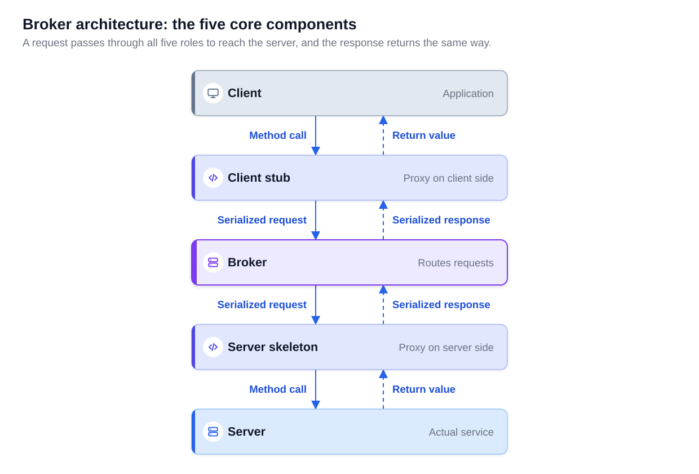
Component 1: The Client
The client is any component that initiates a request for a service. In the basic form of the broker pattern, the client has a specific constraint: it never communicates directly with a server. It always communicates through the broker or through its client-side proxy.
The client's perspective is intentionally simple. It knows the name or identifier of the service it wants to invoke and the parameters for that invocation. It does not know where the server lives, how many instances of the server are running, what technology the server is built with, or what happens internally when the broker processes the request.
The client sends a request and waits for a response. All the distributed systems complexity is invisible to it.
This simplicity is valuable. It means client code is stable even as the server infrastructure changes dramatically.
A client written for a system with one server instance works identically in a system with fifty server instances.
A client written when a service runs on one machine continues to work when that service migrates to a different data center.
The broker absorbs the change.
The client's coupling to the broker takes one of two forms.
In some broker architectures, the client calls the broker's API directly, explicitly addressing requests to the broker.
In more sophisticated architectures, the client uses a client-side proxy (discussed below) that makes the broker call on its behalf, making the broker completely invisible at the calling code level.
Component 2: The Server
The server is any component that provides a service that clients want to consume.
In the basic form of the pattern, the server's constraint mirrors the client's: it never communicates directly with clients. It registers its capabilities with the broker and waits for the broker to forward requests. POSA also describes a direct-communication variant, in which the broker only locates the server and the client then talks to it directly. Part 7 returns to it with the sidecar topology.
When a server starts, it announces itself to the broker: "I am an instance of the OrderService, running at this address, capable of handling these operations."
The broker adds this information to its registry.
When a client requests an OrderService operation, the broker consults its registry, finds a registered OrderService instance, and routes the request there.
This registration mechanism keeps the broker's information about available servers current, after a short detection delay.
When a server shuts down (cleanly or due to failure), the broker removes it from its registry.
When a new server instance starts (due to auto-scaling or deployment), it registers itself and immediately becomes eligible to receive requests. The broker's registry is a near-live picture of the system's available capacity: a crashed server stays in it until its missed heartbeats are noticed.
The server's simplicity mirrors the client's simplicity.
The server implements the operations it provides and registers with the broker. It does not need to implement service discovery, load balancing, or retry logic.
Those concerns belong to the broker.
The server focuses entirely on its business logic.
Component 3: The Broker
The broker is the central component of the pattern. It is the intermediary that receives requests from clients, locates appropriate servers, forwards requests, and returns responses. All coordination in the system flows through the broker.
The broker has several distinct responsibilities that together constitute its role.
-
Service registry management. The broker maintains a registry of all currently available servers and the services they provide. This registry is constantly updated as servers register on startup and deregister on shutdown. The registry is the broker's source of truth for routing decisions.
-
Request routing. When a client request arrives, the broker consults its registry to find a server capable of handling the request. If multiple servers provide the same service, the broker applies a load balancing strategy to select one. The routing decision is invisible to the client.
-
Message translation. In heterogeneous systems where clients and servers use different protocols or message formats, the broker handles translation. A client using a JSON-based protocol can communicate with a server using a binary protocol because the broker translates between them. This interoperability function was central to the original distributed computing broker frameworks and remains important in systems that integrate legacy and modern components.
-
Error handling. When a server is unavailable or returns an error, the broker handles the failure according to configured policies. It can retry an idempotent request on a different instance, return an error to the client, apply a circuit breaker, or redirect to a fallback service. The broker absorbs individual server failures and either resolves them transparently or reports them clearly.
Registry management and request routing together produce the pattern's defining property, location transparency. Whether a server runs on the same machine as the client or in another data center, the client calls it in the same way.
Component 4: The Client-Side Proxy (Stub)
The client-side proxy, often called a stub in distributed computing terminology, is a local object on the client side that represents the remote service.
The client calls methods on the proxy as if the proxy were the actual service.
The proxy translates these local method calls into messages, sends them to the broker, waits for a response, and translates the response back into the return value the client expects.
The proxy is what makes the broker pattern transparent at the code level.
Without a proxy, the client must explicitly construct request messages, send them to the broker, and parse responses.
With a proxy, the client calls order_service.create_order(items) and the proxy handles everything else. The remote call reads like a local call in the code.
Proxies are typically generated automatically from service interface definitions rather than written by hand.
A service definition file describes the service's operations and their parameters. Examples are a Protobuf file for gRPC, a Web Services Description Language (WSDL) file for SOAP, and an Interface Definition Language (IDL) file for CORBA.
A code generation tool reads this definition and produces proxy code in the target language. When the service interface changes, the tool regenerates the proxy, but only clients that rebuild and redeploy receive the new version. Old and new clients therefore run side by side, so interface changes must stay backward compatible, for example by adding optional fields instead of renaming or removing existing ones.
The proxy's responsibilities include serialization (converting method parameters to a wire format like JSON, XML, or binary) and network communication (sending the serialized request to the broker). They also include deserialization (converting the broker's response back to native objects) and error propagation (translating network errors and service errors into exceptions or error values that the client code can handle).
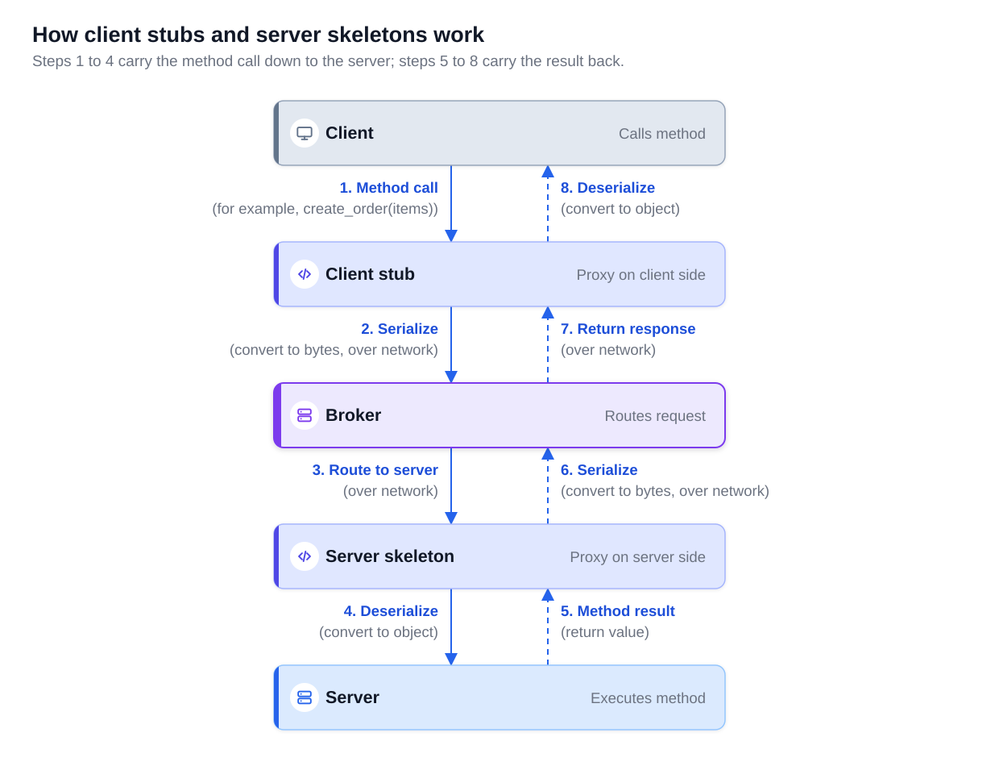
Component 5: The Server-Side Proxy (Skeleton)
The server-side proxy, historically called a skeleton, is the counterpart to the client-side stub. It runs on the server side, receives messages forwarded by the broker, translates them into local method calls on the actual service implementation, executes those calls, and translates the return values back into response messages sent to the broker.
The skeleton handles the server side of the same serialization and deserialization work that the stub handles on the client side.
When a request arrives from the broker, the skeleton deserializes it (converting the wire format back to the server's native types), calls the appropriate method on the service implementation, serializes the response, and returns it to the broker.
Like the stub, the skeleton is typically generated automatically from the service interface definition.
The same Protobuf file that generates the client-side stub also generates the server-side skeleton, ensuring both sides use the same wire format and the same method signatures.
The relationship between stub and skeleton is complementary and symmetric.
The stub converts a local method call into a network message.
The skeleton converts that network message back into a local method call.
Together with the broker, they make a remote call look like a local call in the code. It still behaves differently: it can be slow, it can time out, and it can fail halfway. Good stub interfaces make this visible, through timeouts and specific error types, instead of hiding it.
Part 3: The Message Flow
The Complete Request-Response Lifecycle
Understanding the complete path of a request through a broker system clarifies both the pattern's power and its operational characteristics.
A single request passes through more components than it would in a direct client-server call, and each additional hop adds latency and provides an opportunity for coordination and value-added processing.
The eight steps below use the same numbers as the two flow diagrams in this lesson. Steps 1 to 4 carry the call to the server, and steps 5 to 8 carry the result back.
Step 1: Client calls the local proxy. The client code calls a method on its local stub object. In the code, this looks like a call to any local object, because the network call is hidden inside the stub.
Step 2: Stub serializes the request and sends it to the broker. The stub converts the method call and its parameters into a message suitable for network transmission. It adds metadata: the service name, the operation name, a request identifier for correlation, and any authentication tokens. It then transmits the message to the broker, which is the first network hop in the request path.
Step 3: Broker routes the request to a server. The broker validates the message, checks that the requested service exists in its registry, and authenticates the caller if the system requires it. It then applies its load balancing policy, such as round-robin or least connections, to select one available instance of the service. It forwards the request to that instance, which is the second network hop.
Step 4: Skeleton deserializes the request, and the service executes. The server-side skeleton deserializes the forwarded request, extracts the method name and parameters, and calls the actual service implementation. The service executes its business logic and produces a result.
Step 5: Service returns the result. The service implementation returns the result, or raises an exception, to the skeleton as an ordinary local call.
Step 6: Skeleton serializes the response. The skeleton serializes the return value or the exception into a response message and sends it back to the broker.
Step 7: Broker returns the response. The broker receives the response, uses the correlation ID to identify which client made the original request, and routes the response back to that client's stub.
Step 8: Stub deserializes and returns. The client-side stub deserializes the response and returns the value to the client code, or raises the error as an exception. The method call returns a value as a local call would, but it took longer, and it could have failed or timed out on the way.
This entire sequence is invisible to both the client and the server. The client sees a method call and a return value. The server sees a method invocation and provides a return value. The broker and the proxies handle everything in between.
The code below shows the same path as a plain text trace. It runs from the client call at the top to the return value at the bottom. Notice that the request crosses the network only twice, stub to broker and broker to skeleton.
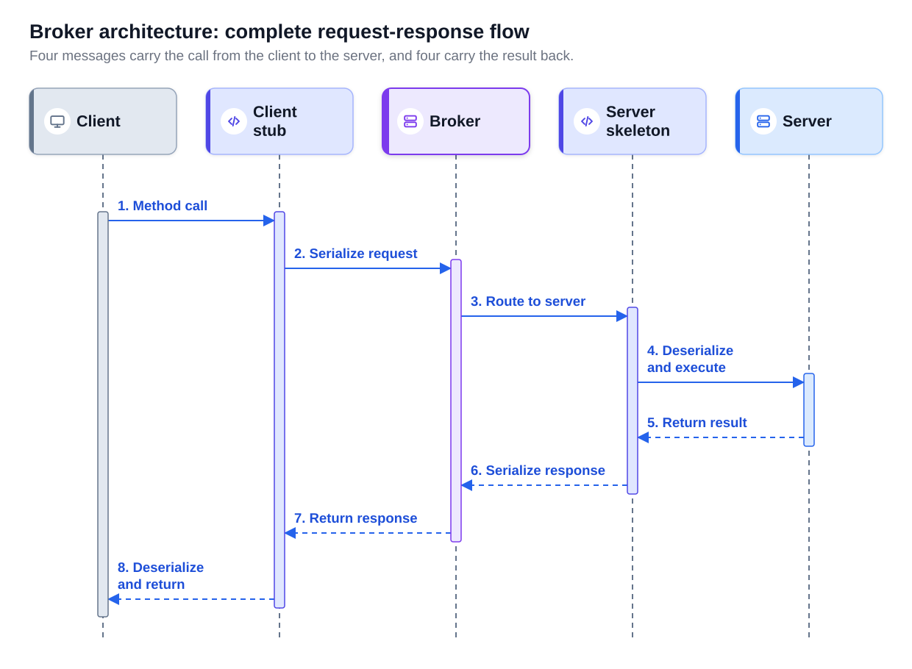
Asynchronous Message Flow
The flow above is synchronous: the client sends a request and waits for the response. A broker can also carry one-way calls, where the client sends a message and continues without waiting. Any result then returns later through a callback or a separate channel, and a request ID (correlation ID) links each result to the request that caused it. When the broker also stores messages until servers are ready to take them, it behaves like a message broker, the related pattern described in Part 8. Event-driven Architecture covers asynchronous delivery, queues and their trade-offs in depth.
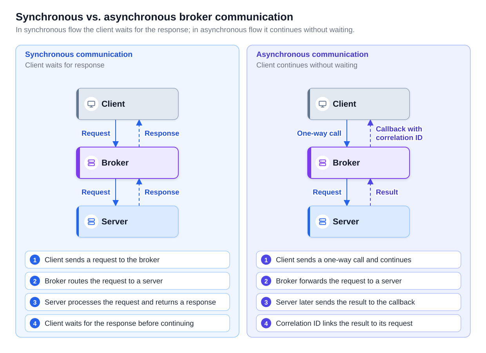
Part 4: Service Discovery
The Broker's Registry
The broker's piece of service discovery is the registry it consults for every routing decision. Without accurate and current registry information, the broker cannot route requests reliably. Service discovery in general (the registry of healthy instances, client-side discovery, and server-side discovery) is taught in Microservices Architecture.
The broker's service registry is a data structure that maps service names to the current list of available instances. Each entry in the registry includes the service identifier, the instance's network address and port, the instance's current health status, the instance's capacity (for weighted load balancing), and metadata such as the instance's version and supported API version. The registry may live inside the broker or in a separate service that the broker queries, as in the diagram below.
The registry must be kept current in real time.
A server that has failed must be removed promptly so the broker does not route requests to it.
A server that has just started must be added promptly so its capacity is immediately available.
A server undergoing a deployment must be temporarily removed so requests are not lost during its restart.
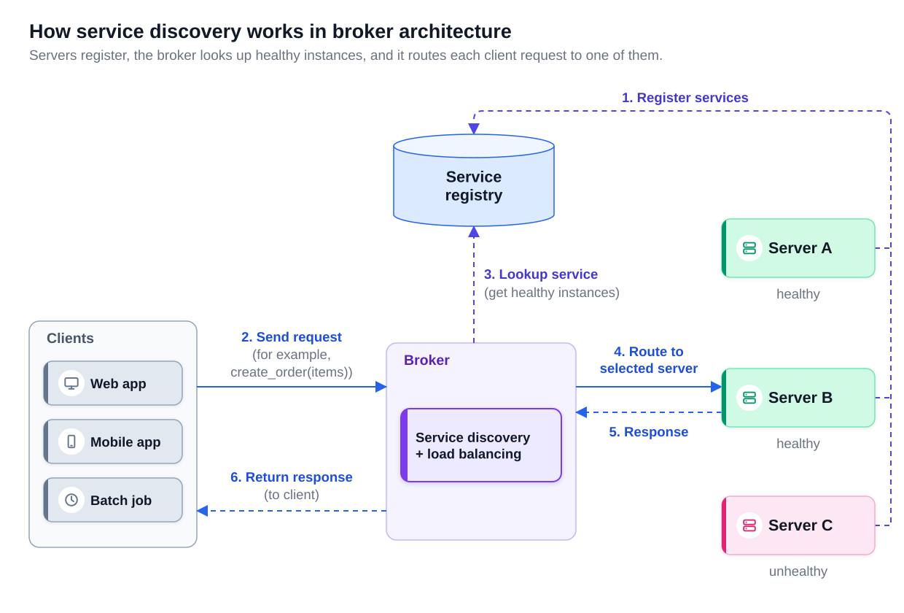
Registration Patterns
Two fundamental patterns exist for keeping the registry current: self-registration and third-party registration.
In self-registration, each server instance is responsible for registering itself with the broker when it starts and deregistering when it stops.
On startup, the server sends a registration message to the broker containing its address and the services it provides.
On clean shutdown, it sends a deregistration message.
For unclean shutdowns (crashes, power failures, network partitions), it relies on a heartbeat mechanism: the server sends periodic signals to the broker indicating it is still alive.
When the broker stops receiving heartbeats from a server, it marks the server as unavailable and removes it from the routing pool.
Self-registration is simple to implement but puts the burden of registration on each service. Every service must include broker registration logic, and bugs in that logic can produce confusing routing failures. It also creates a dependency between the service and the broker at startup time: a service that cannot reach the broker on startup cannot register and may not function correctly even if the broker later becomes available.
In third-party registration, an external component registers services on their behalf, so the service itself knows nothing about the broker. Kubernetes works this way: its control plane (the central components that manage the cluster) watches service endpoints and keeps the registry current. The control plane of a service mesh can play the same role. A service mesh is usually a set of sidecar proxies that carries traffic between services, and its control plane configures those proxies. This removes the registration burden from each service, but the registration agent must be reliable because its failures affect routing for the whole system. The Microservices Architecture lesson shows how callers use such a registry through client-side and server-side discovery.
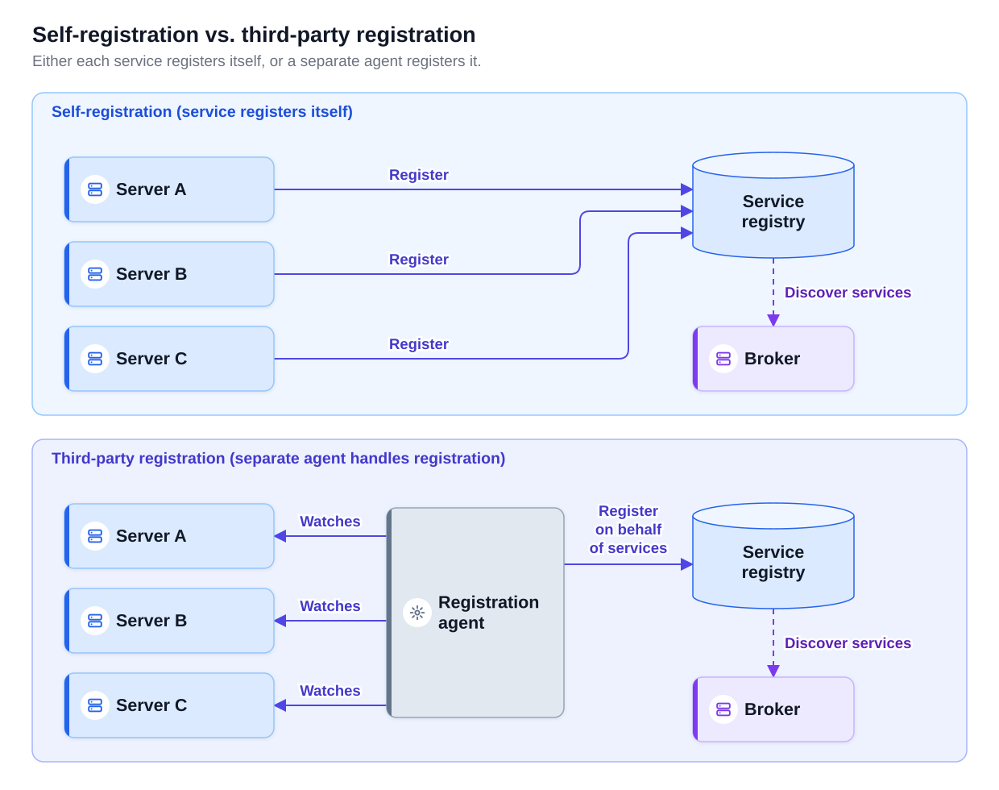
Health Checking
Health checking is inseparable from service discovery.
A server can be registered in the broker's registry but be unable to handle requests: it might be in a starting state, overloaded, experiencing a partial failure, or connected to a database that is down.
Routing requests to an unhealthy server wastes the request (since it will fail) and consumes the server's resources during an already difficult period.
Brokers implement health checking in two ways.
Active health checks: the broker periodically sends probe requests to each registered server (a lightweight HTTP endpoint, a database ping, or a protocol-specific health check) and updates the server's status based on the response.
Passive health checks: the broker monitors the success and failure rates of actual requests forwarded to each server and marks servers as unhealthy when their error rate exceeds a threshold.
Active health checks can catch failures before clients encounter them, but they add traffic overhead.
Passive health checks use real request outcomes as health signals but may expose a few failing requests to clients before the server is marked unhealthy. Production systems typically use both: active checks for rapid failure detection, passive checks for detecting degraded performance under real load.
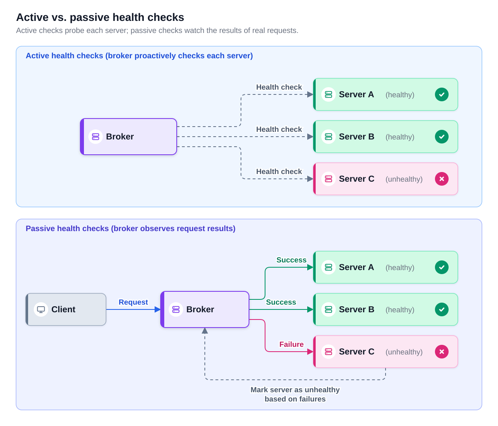
Part 5: Load Balancing
Why Load Balancing Lives in the Broker
Load balancing is a natural responsibility of a central broker. It sees all traffic, so it can balance requests on the global load of every server. Client-side balancing, which sidecars use, sees only one client's traffic but avoids the network hop through a central broker. Each call still passes through the local sidecar processes. Both approaches are common in production.
The broker's strategies range from stateless algorithms that ignore the current system state to stateful algorithms that track ongoing requests and server health.
-
Round-robin sends each request to the next server in a fixed order. Every server receives the same number of requests, so a server that happens to receive several expensive ones in a row carries more load than the others, even though the counts are equal.
-
Weighted round-robin gives each server a weight based on its capacity. A server with twice the capacity of another gets twice the weight and receives twice as many requests in each cycle.
-
Least connections sends each request to the server with the fewest active requests. It handles requests of varying cost better than round-robin, because a server busy with a slow request receives fewer new ones.
-
Consistent hashing picks the server from a hash of a request property, such as a client ID or a resource ID, so the same key always reaches the same server. Each server's cache therefore keeps the data its users need (a warm cache), and a ring-based structure limits how many keys move when servers are added or removed.
-
Adaptive load balancing routes toward the servers with the best current response times and error rates. It reacts to changing conditions but needs more telemetry and more work per routing decision.
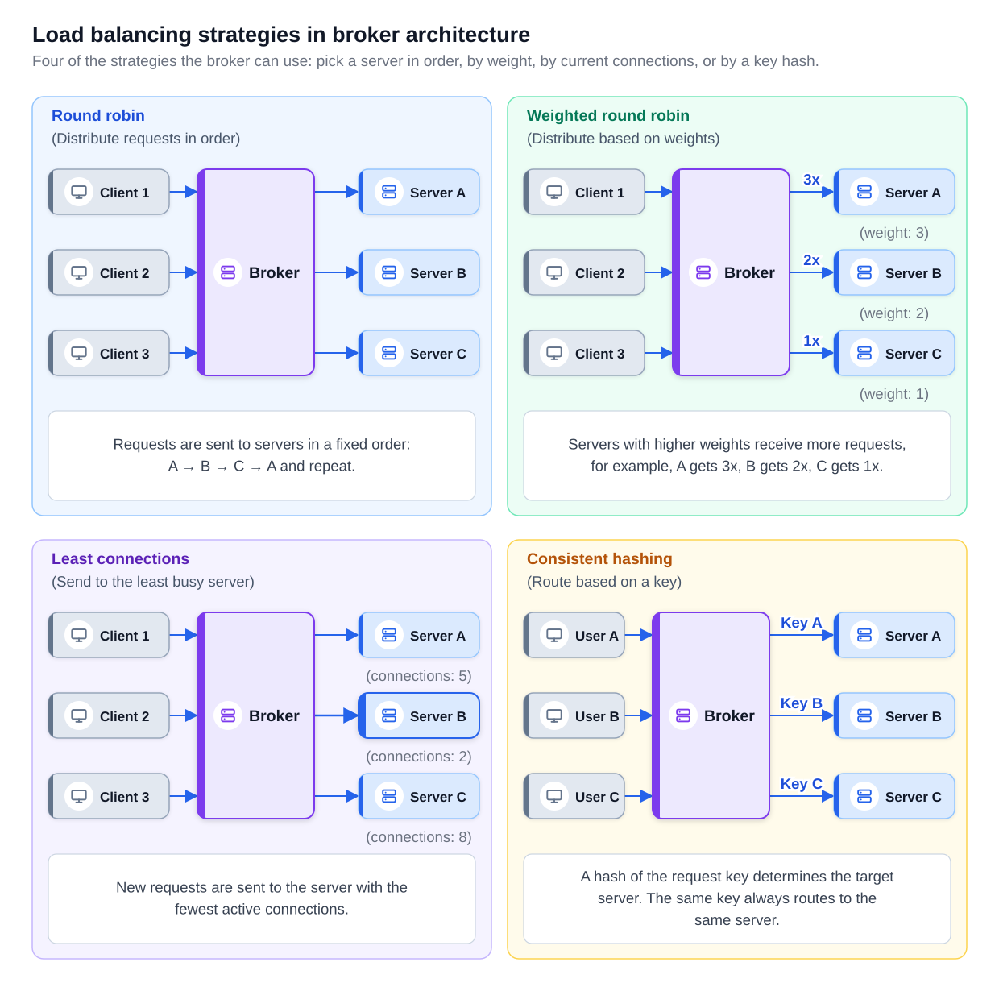
Part 6: Fault Tolerance
How the Broker Handles Server Failures
The broker's central position makes it the natural enforcement point for fault tolerance policies. Timeouts, retries with backoff, circuit breakers and fallbacks are taught in Microservices Architecture. What is specific to the broker is that it applies these policies once, on behalf of every client. For example, it enforces a timeout on every forwarded request, so one slow server cannot hold requests open until the broker runs out of capacity.
Retry with failover. When a request to a server fails or times out, the broker can retry it on a different, healthy instance instead of returning an error to the client. This is safe only for idempotent requests (requests that can be processed more than once with the same effect). For a payment charge or a database insert, the first server may have done the work before the failure, so a retry could process the request twice. A timeout is the most dangerous case, because the broker cannot tell whether the work was done.
Circuit breaker. When a server's error rate passes a configured threshold, the broker stops routing requests to it. It sends them to another healthy instance if one exists, and otherwise it fails them fast. After a cooldown, it sends a few trial requests to test for recovery. The breaker's three states (closed, open, and half-open) are taught in the same Microservices lesson. Because the broker applies the breaker for every client, a failing server is isolated from the whole system in one place.
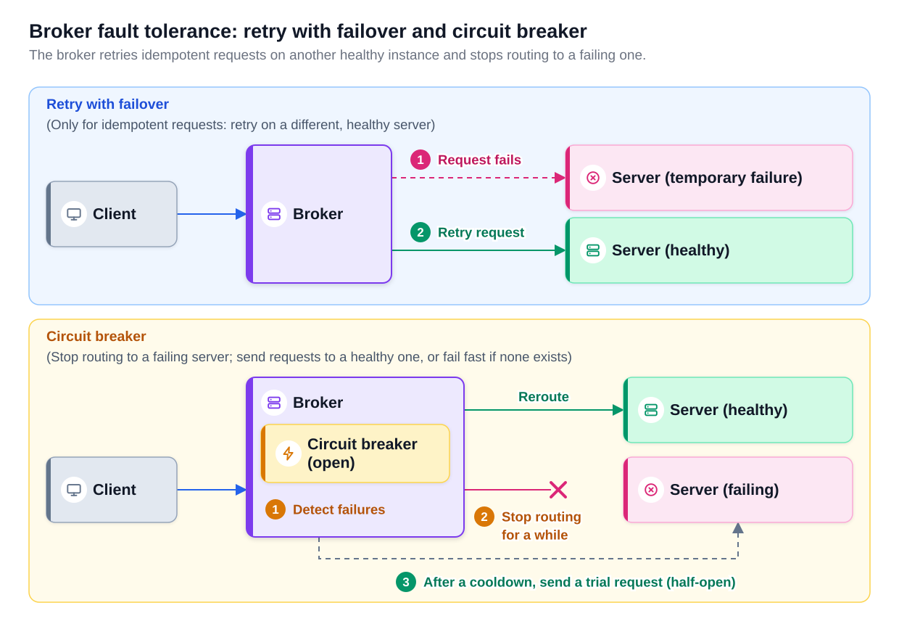
Part 7: Broker Topologies
The Central Broker Topology
The most common topology is a centralized broker: a single logical broker (potentially running as a cluster for high availability) that all clients and servers connect to.
All routing, service discovery, and message translation happen in this central point.
The central broker topology is simple to understand, simple to operate, and simple to monitor.
There is one place to look for routing logs, one place to configure load balancing policies, and one place to add cross-cutting concerns like authentication, rate limiting, and observability.
The central topology's weakness is that the broker itself is a potential single point of failure and a potential performance bottleneck.
If the broker goes down, the entire system loses its routing capability.
If the broker becomes saturated under high load, all requests slow down, not just requests for the overloaded services.
Both concerns are mitigated by running the broker as a cluster with redundant nodes and by sharding the registry across broker nodes so that different services route through different broker nodes. But these mitigations add operational complexity and the fundamental centralization remains.
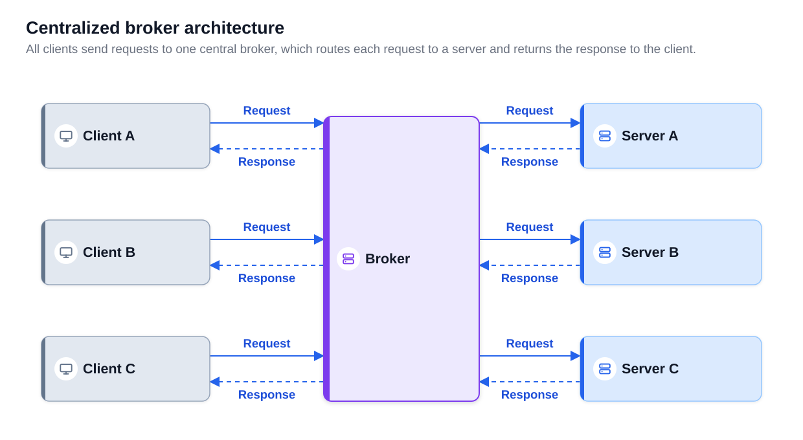
The Hierarchical Broker Topology
Hierarchical brokers address the centralization problem by organizing brokers into a tree structure. Local brokers handle routing within a region or data center.
A top-level broker handles routing between regions. Clients connect to their nearest local broker.
The local broker handles requests that can be satisfied by local servers.
For requests requiring cross-region routing, the local broker forwards to the top-level broker.
This topology reduces the load on any single broker, keeps most traffic local (reducing latency for the common case), and limits how far a failure spreads between regions.
A failure in one region's broker stops routing in that region, but other regions keep serving their local requests. Only their calls to services in the failed region fail, and a failure of the shared top-level broker stops all cross-region routing.
The trade-off is complexity. Routing decisions now span multiple hops, making debugging harder. Service registration must propagate through the hierarchy, which adds latency for new service registrations to become visible everywhere. Cross-region routing adds latency for requests that require it.
The Federated Broker Topology
In federated broker topologies, multiple independent brokers operate without a hierarchy.
Each broker handles a domain or a cluster of services. Brokers connect to each other through bridges, the optional sixth role from Part 2. A bridge also translates between protocols when the brokers come from different vendors.
When a broker receives a request for a service not in its own registry, it forwards the request to a peer broker that has that service registered.
Federation is the topology used by many message broker systems (RabbitMQ federation, ActiveMQ networks of brokers). It provides flexibility and avoids the single hierarchy of the hierarchical topology, but it makes routing behavior harder to reason about because a request may traverse multiple broker hops before reaching its destination.
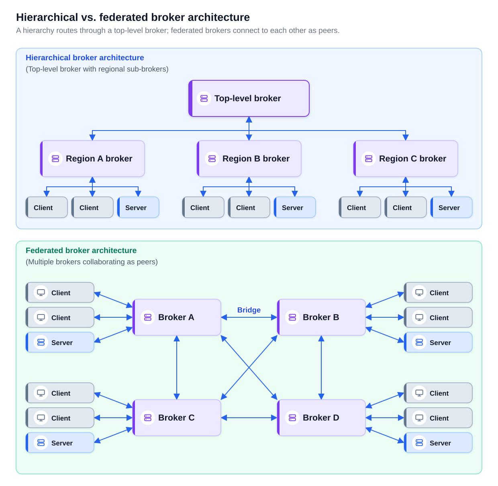
The Embedded (Sidecar) Topology
In modern microservices environments, the broker pattern is often implemented as a sidecar proxy: a small proxy process running alongside each service instance (in Kubernetes, this is a container in the same pod).
The sidecar intercepts all outbound traffic from the service and all inbound traffic to the service.
Sidecar proxies collectively implement the broker pattern in a distributed form.
Each sidecar has a copy of the service registry (pushed by a central control plane).
When service A needs to call service B, service A's sidecar consults its local registry, selects a healthy instance of B, and routes the request directly to B's sidecar (which handles the server-side proxy responsibilities).
This is close to the direct-communication variant from Part 2. The broker function only locates the server, and the caller then talks to it directly, with no central relay in between. Client-side discovery, where the caller looks up an address and then calls it, follows the same variant.
This topology, used by service meshes such as Istio and Linkerd (Istio uses the Envoy proxy as its sidecar), eliminates the central broker bottleneck by distributing the broker's routing function to every service instance.
The control plane provides consistent configuration and registry data across all sidecars. The data plane (actual request routing) is handled peer-to-peer between sidecars.
The sidecar topology scales linearly with the number of service instances and eliminates the central broker as a bottleneck.
The trade-off is the operational overhead of running a sidecar alongside every service instance, which consumes additional resources and adds operational complexity.
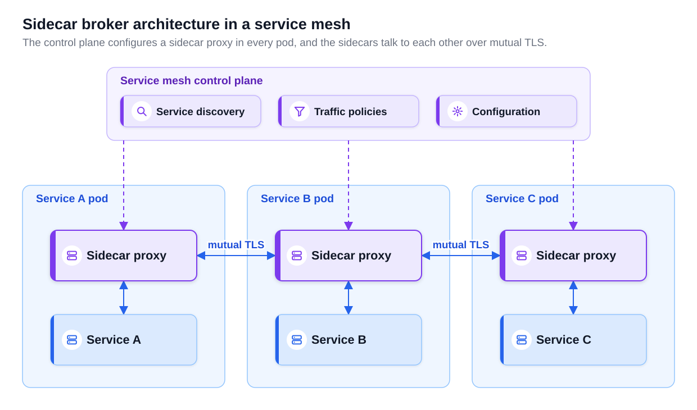
Part 8: Where Broker Architecture Appears in Production
CORBA and the Early Broker Frameworks
CORBA, an industry standard from the Object Management Group in the early 1990s, was the best-known broker system. The Broker pattern itself was written down later, in POSA Volume 1 by Buschmann, Meunier, Rohnert, Sommerlad and Stal, which cited CORBA as a known use of the pattern.
CORBA was an attempt to allow objects written in different programming languages running on different operating systems to call each other's methods over a network.
CORBA's Object Request Broker (ORB) is a direct implementation of the broker pattern. It provides object lookup (the Naming Service) and an Interface Repository that stores interface definitions for calls built at runtime. It also provides client-side stubs and server-side skeletons (both generated from IDL interface definitions), request routing, and protocol translation between different ORB implementations.
CORBA was widely deployed in enterprise systems from the 1990s through the 2000s and established the conceptual vocabulary (stub, skeleton, broker, IDL) that later distributed systems frameworks drew on.
CORBA's decline was driven by its complexity, the difficulty of getting implementations from different vendors to interoperate, and the rise of simpler HTTP-based alternatives. But its conceptual contribution to distributed systems thinking was lasting.
A Related Pattern: Message Brokers
Message brokers such as Kafka, RabbitMQ, ActiveMQ, and NATS are widely deployed intermediaries in modern systems, but they are not implementations of the broker pattern.
They share its central idea, an intermediary that hides each side from the other. Producers publish messages to the broker without knowing which consumers exist. Consumers subscribe to topics or queues without knowing which producers exist, and the broker handles routing, buffering, and delivery.
What they leave out is the remote call. A producer does not invoke an operation on a consumer, no return value comes back, and no stub or skeleton is involved. Message brokers are a related pattern (publish-subscribe or message queue), which Event-driven Architecture covers in depth.
API Gateways
An API gateway applies the broker idea at the boundary of a system: it sits between external clients (browsers, mobile apps, third-party developers) and the internal services that handle their requests. Like a broker, it gives clients one stable address, routes each request to the right service, and hides where that service runs. Unlike the broker pattern, it has no stubs or skeletons, usually handles HTTP traffic, and spends most of its effort on cross-cutting concerns at that boundary. The gateway's main responsibilities, such as authentication, rate limiting, routing and response aggregation, are taught in Microservices Architecture.
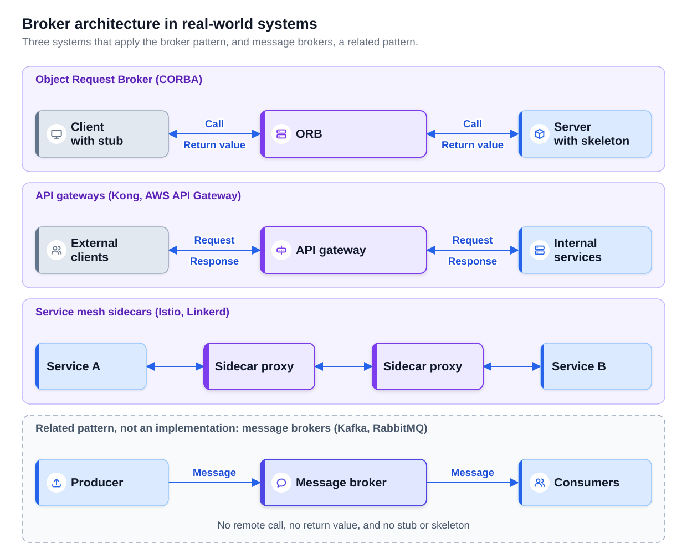
Service Meshes
Service meshes (Istio, Linkerd, Consul) usually implement the broker pattern in the sidecar topology described earlier. Each service instance is paired with a sidecar proxy that handles all network communication on its behalf.
The sidecar implements the client-side proxy for outbound calls and the server-side proxy for inbound calls.
The service mesh control plane distributes the service registry (typically implemented using the Kubernetes service object model) to all sidecars. It also distributes routing rules, traffic policies, and TLS certificates.
The data plane (the sidecars themselves) applies these rules to actual traffic without further consulting the control plane.
Service meshes bring the broker pattern's benefits (location transparency, load balancing, circuit breaking, observability) to microservices environments without requiring any changes to service code.
The sidecar intercepts traffic transparently, making the broker invisible at the application level while providing all its coordination capabilities.
Part 9: Advantages and Limitations
The Real Advantages
-
Location transparency is the broker pattern's defining advantage. Services can be moved, scaled, and replaced without clients knowing. This is the foundation of dynamic scaling, zero-downtime deployments, and resilient distributed systems. Without the broker's abstraction layer, every change to the server infrastructure requires corresponding changes to clients.
-
Centralized cross-cutting concerns. Authentication, authorization, rate limiting, request logging, observability, and protocol translation can all be handled once in the broker rather than implemented in every service. This reduces the per-service implementation burden and ensures consistency across the system. A security vulnerability in authentication logic is fixed in one place rather than many.
-
Dynamic load distribution. The broker can continuously adjust routing based on current server health and load, preventing hot spots and ensuring available capacity is used efficiently. Clients do not need to implement load balancing logic because the broker handles it centrally with better information than any single client has.
-
Fault isolation. The broker's retry, circuit breaker and fallback policies keep many server failures away from clients. When another healthy instance exists, a failed idempotent request can be retried there, and the client sees only a slower response. When no fallback is configured, an open circuit still returns an error, but it returns it at once instead of after a long timeout. Requests that are not idempotent cannot be retried safely, so their failures still reach the client.
-
Interoperability. The broker's message translation capability enables clients and servers built with different technologies, protocols, and data formats to communicate. This is particularly valuable in large organizations where services are written in different languages by different teams at different times.
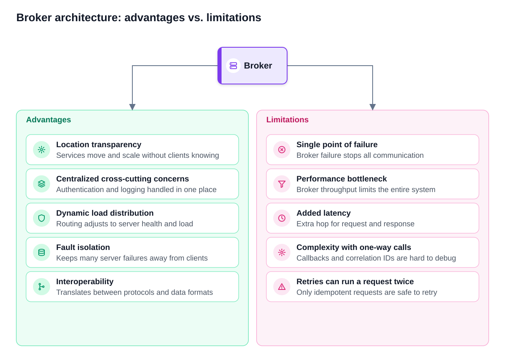
The Real Limitations
-
The broker is a potential single point of failure. If the central broker fails, all communication in the system stops. Clustering and replication mitigate this but add operational complexity. The sidecar topology distributes the failure surface but introduces different operational challenges.
-
The broker adds latency. A direct client-server call makes one network hop, while a brokered request makes two (client to broker, broker to server). The broker therefore adds one extra hop on the request path and one on the response path. For latency-sensitive operations, this overhead may be unacceptable. The sidecar topology reduces this overhead (sidecars communicate directly, bypassing a central broker hop) but does not eliminate it.
-
The broker can become a performance bottleneck. All traffic in the system passes through the broker. Under very high load, the broker's throughput limits the entire system's throughput. Vertical scaling (more powerful broker hardware) and horizontal scaling (broker clusters with sharding) can address this, but they add cost and complexity.
-
Complexity increases with one-way calls. When a broker carries one-way calls (Part 3), the programming model shifts from simple method calls and return values to callbacks, correlation IDs, and separate response channels. Debugging these flows is significantly harder than debugging synchronous calls. Distributed tracing, which links a chain of calls across multiple services, is needed but non-trivial to implement correctly.
-
Retries can run a request twice. A broker that retries a failed or timed-out request on another instance cannot tell whether the first instance already did the work (Part 6). It therefore cannot guarantee by itself that a request runs exactly once. Requests that are not idempotent must not be retried, unless the servers detect duplicates, for example with idempotency keys.
When to Use a Broker, and When Not To
Direct service-to-service calls are the better choice when the system is small (a handful of services with stable addresses) and when latency is critical (every broker hop adds overhead). They also suit services that are closely related enough that coupling their communication paths is acceptable.
A broker becomes appropriate when services are numerous enough that keeping every address in every client is impractical, and when services scale horizontally so their addresses change often. It also helps when cross-cutting concerns, such as authentication, rate limiting and observability, must be applied consistently without per-service code.
The usual signal for introducing a broker is a recurring cost: engineers updating service addresses across many clients, inconsistent authentication across services, or services that cannot scale without reconfiguring their callers.
FAQs
Q: What is the difference between a message broker and the broker architecture pattern?
The broker architecture pattern is the general structural concept: an intermediary component that coordinates communication between clients and servers, providing location transparency, routing, and cross-cutting concerns. It describes the roles (client, server, broker, stub, skeleton) and their relationships without specifying any particular technology or communication style.
A message broker (Kafka, RabbitMQ, ActiveMQ) is a related pattern rather than an implementation, for the reasons given in Part 1: it passes messages from producers to consumers with no remote call and no return value. The technologies that apply the broker pattern itself include CORBA's ORB (for distributed object calls), service meshes (through sidecar proxies), and, in a looser form, API gateways (for synchronous HTTP).
When people say "broker architecture," they may mean either the general pattern or specifically message-broker-based architecture. The context usually clarifies which. This lesson covers the general pattern; message brokers appear in it only as a related pattern.
Q: How does the broker pattern relate to microservices architecture?
Microservices architecture decomposes applications into independently deployable services. The broker pattern is a coordination mechanism for making those services work together. They are complementary rather than competing.
Microservices create the need for the broker pattern: when you have fifty independently deployed services, managing direct connections between them becomes the organizational and operational bottleneck that the broker pattern was designed to solve. The dynamic nature of microservices (constant deployment, auto-scaling, health-driven routing) is precisely the environment in which the broker's dynamic registry and location transparency are most valuable.
Many microservices deployments apply the broker pattern in two places: an API gateway for external traffic and a service mesh (sidecar broker topology) for internal service-to-service traffic. Many also add message brokers, the related pattern, for asynchronous workflows. Each addresses a different aspect of the coordination challenge that microservices architecture creates.
Q: What is the difference between the broker pattern and the proxy pattern?
A proxy is a structural design pattern where one object represents another object and controls access to it. A proxy is interposed between a client and a single specific target object.
The broker pattern uses proxies (stubs and skeletons) as its client-side and server-side boundary components, but the broker is more than just a proxy. The broker adds service discovery (a plain proxy is bound to one known target and never looks one up) and load balancing (the proxy connects to one specific target). It also adds registry management (the proxy does not maintain a catalog of available services) and fault tolerance (the proxy does not automatically retry with alternative targets).
A stub in the broker pattern is a proxy. But the broker that the stub connects to, and the routing logic in that broker, go far beyond what a simple proxy provides. The broker pattern is a system-level architectural pattern. The proxy is a component-level design pattern. The broker pattern uses proxy components but defines an architecture around them.
Q: What happens when the broker itself fails?
When the central broker fails, communication between clients and servers stops until the broker recovers. This is the pattern's most significant operational risk and the reason production broker deployments use clustering and replication.
A broker cluster runs multiple broker nodes, with a leader election mechanism (Raft, ZooKeeper, or the broker's own consensus protocol) determining which node coordinates the cluster. When a node fails, the remaining nodes continue operation. Client and server connections fail over to healthy nodes, typically through a virtual IP (one network address that can move between machines) or a DNS name that lists only the healthy cluster members.
The sidecar topology eliminates the central broker single point of failure by distributing the broker function to every service instance. When one sidecar fails, it takes down only the service instance it accompanies, not the routing function for the entire system.
Key Takeaways
-
The broker pattern introduces an intermediary component between clients and servers that handles routing, service discovery, and coordination. Clients and servers communicate through the broker rather than directly with each other.
-
The five core components are the client, the server, the broker itself, the client-side proxy (stub), and the server-side proxy (skeleton). The stubs and skeletons are what make the broker transparent at the code level, turning network calls into what appear to be local method calls, although those calls remain slower and can fail. POSA also names an optional sixth role, the bridge, which connects brokers.
-
Location transparency is the pattern's defining benefit. Clients do not need to know where servers are. Servers can be added, moved, scaled, or replaced without clients knowing. The broker absorbs all infrastructure volatility.
-
Service discovery and registry management are the broker's operational foundation. The broker maintains a live registry of available servers, updated through self-registration with heartbeats or through third-party registration by a platform such as Kubernetes. Requests go to the servers the registry lists as healthy, although a crashed server can still receive requests until its missed heartbeats or failed health checks are noticed.
-
Load balancing in a central broker uses its view of all traffic to balance on global load, with round-robin, least connections, consistent hashing, or adaptive algorithms. Client-side balancing in sidecars sees less of the traffic but avoids the network hop through a central broker.
-
Fault tolerance through circuit breakers and retry shields clients from many individual server failures. The broker's circuit breaker prevents requests from being routed to consistently failing servers. Retry with failover redirects failed requests to healthy alternatives, for idempotent operations only. When no healthy instance or fallback exists, the client still receives an error, although an open circuit returns it quickly.
-
The four main broker topologies are central (simple, one logical broker), hierarchical (regional brokers under a top-level broker), federated (peer brokers with inter-broker links), and sidecar-based (each service instance has a local proxy). Each trades simplicity against scalability and failure isolation differently.
-
The pattern's limitations are real. The broker adds latency (one extra network hop on the request path and one on the response path), can become a bottleneck under extreme load, and is a potential single point of failure if not clustered. It adds programming model complexity when it carries one-way calls, and its retries cannot by themselves make a request run exactly once.
-
Production implementations include CORBA's ORB (the classic example), API gateways in a looser form (Kong, AWS API Gateway, or Nginx configured as a gateway), and service meshes (Istio, Linkerd). Each applies the pattern to a specific domain with specific trade-offs. Message brokers (Kafka, RabbitMQ) are a related pattern rather than an implementation, because they pass messages from producers to consumers with no remote call and no return value.
-
In a system design interview, name the five roles, walk through the request-response flow, and name the topology that fits the scale and failure isolation needs.
0 Comments
No comments yet. Be the first to start the discussion!
Reading Progress
0%
On This Page
Know the Vocabulary
Part 1: What the Broker Pattern Is
The Definition
The Problem It Solves
Part 2: The Five Core Components
Component 1: The Client
Component 2: The Server
Component 3: The Broker
Component 4: The Client-Side Proxy (Stub)
Component 5: The Server-Side Proxy (Skeleton)
Part 3: The Message Flow
The Complete Request-Response Lifecycle
Asynchronous Message Flow
Part 4: Service Discovery
The Broker's Registry
Registration Patterns
Health Checking
Part 5: Load Balancing
Why Load Balancing Lives in the Broker
Part 6: Fault Tolerance
How the Broker Handles Server Failures
Part 7: Broker Topologies
The Central Broker Topology
The Hierarchical Broker Topology
The Federated Broker Topology
The Embedded (Sidecar) Topology
Part 8: Where Broker Architecture Appears in Production
CORBA and the Early Broker Frameworks
A Related Pattern: Message Brokers
API Gateways
Service Meshes
Part 9: Advantages and Limitations
The Real Advantages
The Real Limitations
When to Use a Broker, and When Not To
FAQs
Key Takeaways